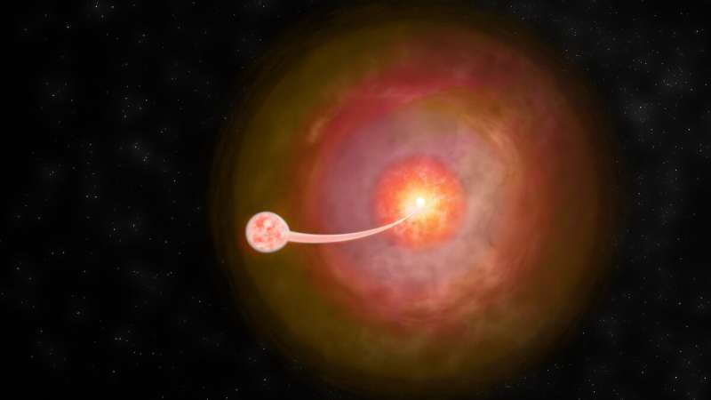

Jo shpërthimi juaj mesatar i hapësirës
Ndërsa studionte novaet klasike duke përdorur vargun bazë shumë të gjatë të Observatorit Kombëtar të Astronomisë së Radios (VLBA), një studiues i diplomuar zbuloi prova që tregojnë se objektet mund të jenë shkruar gabimisht si të thjeshta. Vëzhgimet e reja, të cilat zbuluan emetim jo-termik nga një nova klasike me një shoqërues xhuxh, u prezantuan në një konferencë shtypi gjatë punimeve të 242-të të Shoqërisë Astronomike Amerikane në Albuquerque, New Mexico. V1674 Herculis është një nova klasike e organizuar nga një shoqërues xhuxh i bardhë dhe xhuxh dhe aktualisht është nova klasike më e shpejtë e regjistruar. Ndërsa studionte V1674Her me VLBA, Montana Williams, një studente e diplomuar në New Mexico Tech e cila po drejton hetimin mbi vetitë VLBA të kësaj nova, konfirmoi të papriturën: emetimin jo termik që vjen prej saj. Këto të dhëna janë të rëndësishme sepse i tregojnë Williams dhe bashkëpunëtorëve shumë për atë që po ndodh në sistem. Ajo që ekipi ka gjetur është gjithçka tjetër përveç shpërthimeve të thjeshta të shkaktuara nga nxehtësia që shkencëtarët prisnin më parë nga novaet klasike "Novat klasike historikisht janë konsideruar si shpërthime të thjeshta, që lëshojnë kryesisht energji termike," tha Williams. "Sidoqoftë, bazuar në vëzhgimet e fundit me Teleskopin e Zonës së Madhe Fermi, ky model i thjeshtë nuk është plotësisht i saktë. Në vend të kësaj, duket se janë pak më të komplikuar. Duke përdorur VLBA, ne ishim në gjendje të merrnim një pamje shumë të detajuar të një prej ndërlikimet kryesore, emetimi jo termik”.